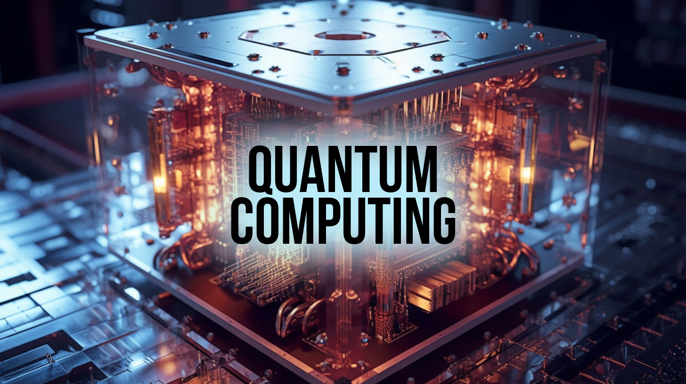
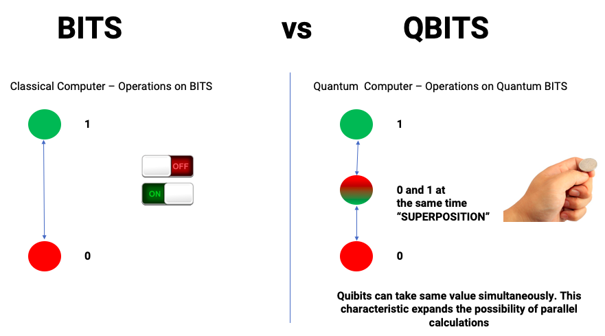
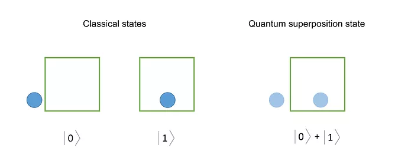
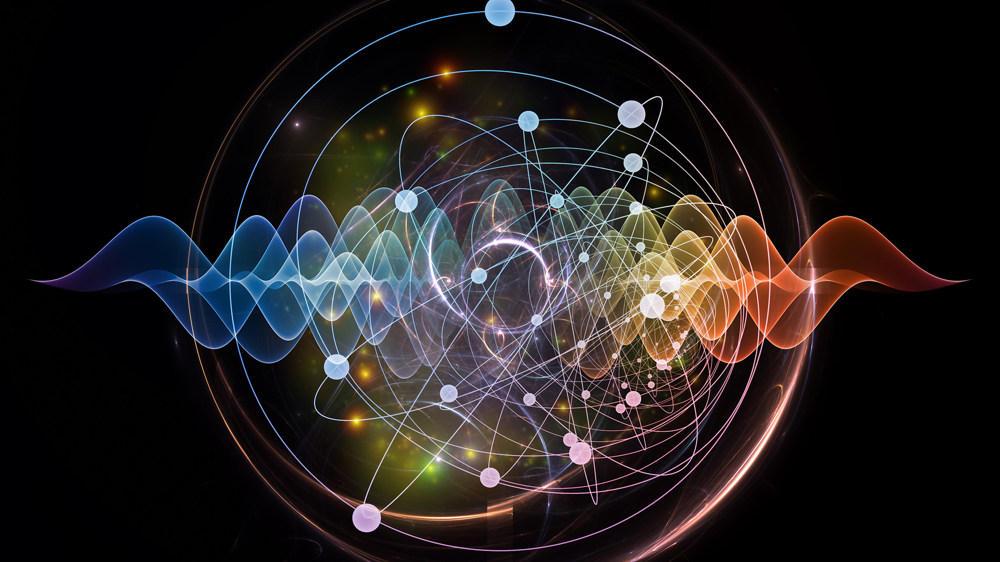
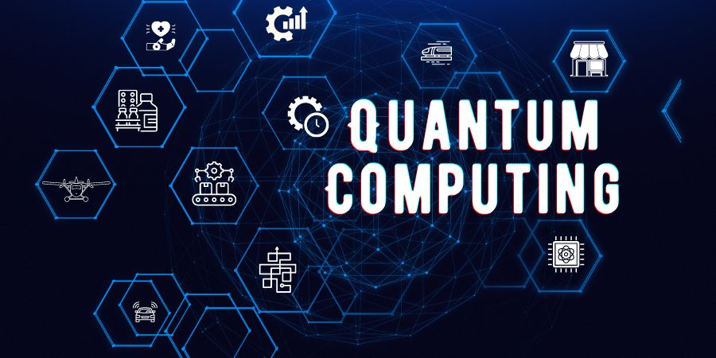
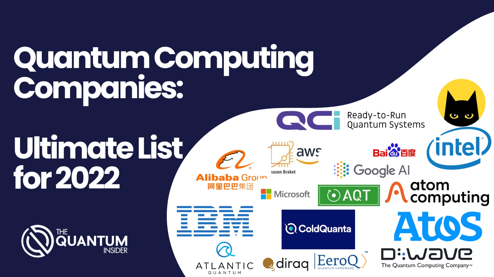

Quantum Computing📅
Reference
Introduction
- Quantum computers make direct use of quantum mechanical phenomena such as superposition and entanglement to perform operation of data much more faster than the Normal Computer.
- Quantum computers use quantum bits(QUBITS) which
can be in superposition of states.

What is Qubit?
- A QUBITS uses the spin of an atom to represent the current value
- At any one time, the QUBITS is both a 0 and 1.
- One QUBIT value is equal to 2 BITS.
- Qubit States:
- 0=OFF
- 1=ON
- SUPER POSITION- ALL PROBABILITY OF 0 OR 1

QUANTUM SUPERPOSITION
- Superposition is the ability of a quantum system to be in multiple states at the same time until is measured.
- In quantum mechanics ,a particle can be in a superposition of different states(both a particle and in waveform).
- Example Double slit experiment.

Quantum Entanglement
- In Simple term, when two particles link together in a certain way no matter how far they are in space.
- Their state remains the same.
- Quantum Entanglement is the state where two systems are so strongly correlated that gaining Information about one system will give Information about the other .

FUTURE APPLICATIONS
- ARTIFICIAL INTELLIGENCE
- HARDWARE AND SOFTWARE ERROR SIMULATION
- DATA ANALTICS
- NANOTECHNOLOGY
- DIGITAL SECURITY
-
CRYPTOGRAPHY

ADVANTAGES
- Quantum Computers are faster than traditional computers can never match
- Faster computations
- Medicine creation
- Google search
- High privacy
DISADVANTAGES
- Difficult to build and require unique components, expensive and requires massive cooling system
- Not open for public
- It is assumed by the scientists that if a quantum computer is implemented in the best way then whole internet security breaks
- Due to the high range price they are not available for public use
CONCLUSION
Quantum computing is a revolutionary technology that integrates quantum physics properties into a computer. This technology could revolutionize industries by solving complex problems at a faster rate than traditional computing methods.Quantum Computing is an excellent idea and will be available for computing in the future. But , Scientists still have some problems to work out . Quantum Computing is not ready for practical use yet.
